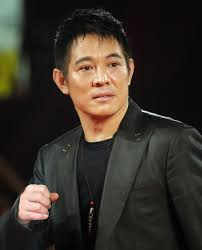
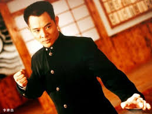

Biography
Jet Li, born on April 26, 1963, in Beijing, China, is a world-renowned martial artist and actor. Li began his martial arts training at the age of eight and quickly rose to prominence in China for his skills. He later transitioned into acting and became an international action star with films such as Shaolin Temple, Once Upon a Time in China, and Hero.
Famous Movies
- Shaolin Temple (1982) - Li's breakthrough film where he starred as a young monk trained in martial arts.
- Once Upon a Time in China (1991) - A film series that brought him international fame as Wong Fei-hung, a legendary Chinese folk hero.
- The One (2001) - A science fiction action film where Jet Li plays dual roles as both a hero and villain.
- Fearless (2006) - Based on the life of martial artist Huo Yuanjia, this is one of Li's most acclaimed works.
- The Expendables (2010) - An action-packed film where Li joins an ensemble cast of Hollywood action stars.
Gallery
Here are some of Jet Li's iconic moments from his career:

